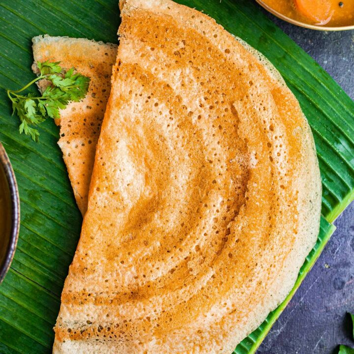
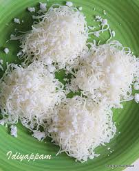

இட்லி / IDLI
It aids digestion, weight management, heart health, and offers sustained energy.

தோசை / Dosa
Packed with scarbohydrates, proteins, and dietary fiber, dosas don't compromise on nutritional value, providing you a source of sustained energy.

இடியாப்பம் / Idiyappam
It helps to regulate blood sugar levels, improve digestion,and reduce the risk of heart disease.

புட்டு / Steamed Rice cake
It is a good source of fiber, which is essential for regulating blood sugar ,levels and aids in weight loss.